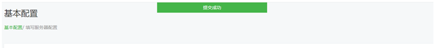

前言：
如果让大家说出一款国内比较热门的社交软件，那无疑就是QQ和微信了，说到微信，无不例外的会想到微信公众号和小程序，所以现在它们已经是很多企业流量及品牌推广的主要途径，
而作为一个开发者而言呢，如果想要开发打造一款属于自己或企业的公众号，就是需要对微信公众号平台API文档的熟悉。
你可以花上半天的时间大致阅读一下文档微信公众号开发文档
资源：
当你大致了解了微信公众号开发文档之后，就可以开始入手了
1.需要登录微信公众号平台https://mp.weixin.qq.com/
2.注册公众号账号，选择类型，如果你是作为个人开发的话，可以选择订阅号，如果作为企业开发的话，也可以选择服务号、企业，在这里，为了测试使用，所以暂时使用个人的订阅号作为开发
3.注册成功后，登录 选择成为开发者
配置：
1.需要appID，appsecret来获得Token
2.需要一个服务器，可以去买一个服务器或者通过内网映射的方式让外部网络通过域名可以访问本地IIS站点
3.通过C# VS2017 并且结合微信公众平台SDK Senparc.Weixin for C#,所以你必须对Senparc进行独立的了解 http://weixin.senparc.com/
开始:
1.登录公众号后：
可以看到系统分配了一个AppID(应用ID)和
而里面需要我们手动填写服务器配置并启用开发者模式： URL地址,Token令牌,EncodingAESKey消息加密密钥
这里的Token令牌可以自己创建，EncodingAESKey消息密码系统自动生成的，而URL呢，我们的资源服务器，资源服务器是给微信中转的服务器，微信将对这个接口（我们的站点）进行Get和POST的请求
具体的可以查看微信公众号开发文档
2.配置服务器地址
2.1引入安装Senparc.Weixin.MP库
2.2新建控制器WXController ,控制器包含一个GET请求，Get是验证使用
public class WXController : Controller
{
public static readonly string Token = "WXToken";//与微信公众账号服务器配置的Token设置保持一致，区分大小写。
public static readonly string EncodingAESKey = "Q3vhz8zLwPYPbjz6S7JXiwSyAgW4vmInz6RzWWltEpk";//与微信公众账号服务器配置的EncodingAESKey设置保持一致，区分大小写。
public static readonly string AppId = ".........";//与微信公众账号后台的AppId设置保持一致，区分大小写。(这里的AppId填写自己的)
// GET: WC/WX
public ActionResult Index()
{
return View();
}
[HttpGet]
[ActionName("Index")]
public Task<ActionResult> Get(string signature, string timestamp, string nonce, string echostr)
{
return Task.Factory.StartNew(() =>
{
if (CheckSignature.Check(signature, timestamp, nonce, Token))
{
return echostr; //返回随机字符串则表示验证通过
}
else
{
return "failed:" + signature + "," + CheckSignature.GetSignature(timestamp, nonce, Token) + "。" +
"当你打开URL访问当前地址的时候，说明该地址可以作为微信公众号服务器配置地址的URL，请注意保持Token一致。";
}
}).ContinueWith<ActionResult>(task => Content(task.Result));
}
}2.3 完成以上几个值的填写和配置后，发布站点，在公众号中修改服务器配置，提交之后，就可以成功配置服务器了

到了这里，我们已经完成了微信公众号基本的服务器配置了，在后续中，对微信的请求都是基于这个服务器地址配置对微信公众号调用请求。
附加：
如果你是通过测试公众号的话，也可以测试是否可以配置成功
访问测试公众号平台地址，登录授权成功后：
在接口配置中输入URL和Token值后，提交后，显示提交成功，这说明这个URL地址也是可以配置成功的
总结：
1.在微信公众号开发中，只要我们对开发文档熟悉和在正确的配置的参数要求之后，就基本可以完成这个基本的服务器配置要求了，对后续微信公众号其他的开发也是一个美好的开端
2.在这里也利用了SDK Senparc，仅仅需要关心我们的业务，其他的内容已经帮我们处理好了，可以通过它进行更快速更高效的开发
3.最重要的一点，也是对大部分人合适的一点就是：熟悉之后就开始动手实践吧，只有自己动手实践一遍，才能让自己理解的更透彻，记得更牢固。
好记性不如烂笔头，撸起代码吧！！！燃烧我的代码吧！（这好像不太合适，O(∩_∩)O哈哈~）